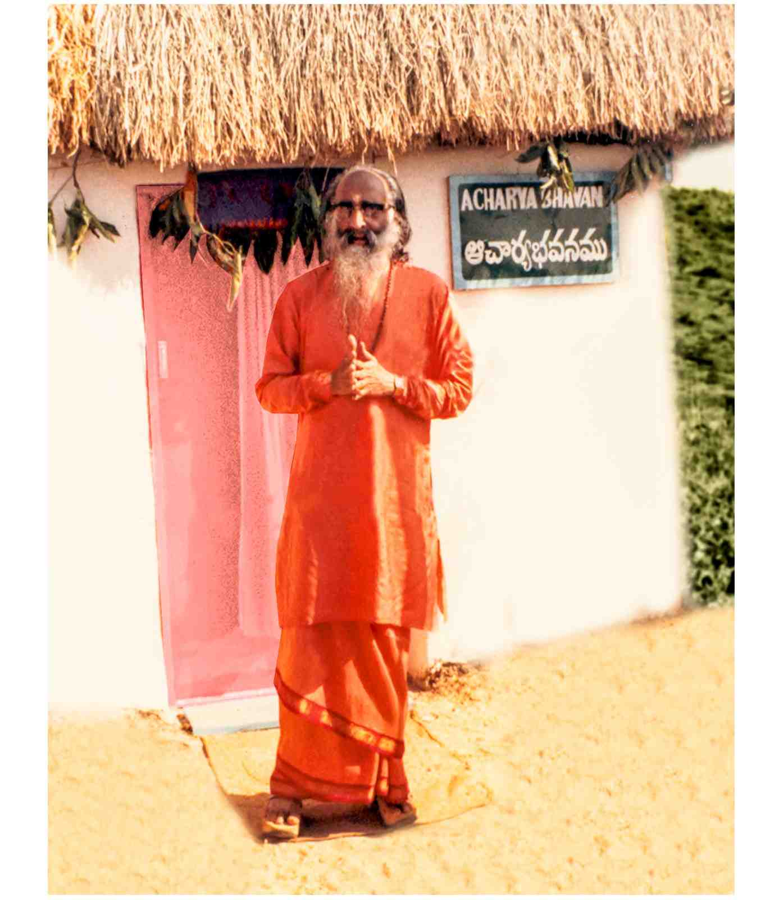
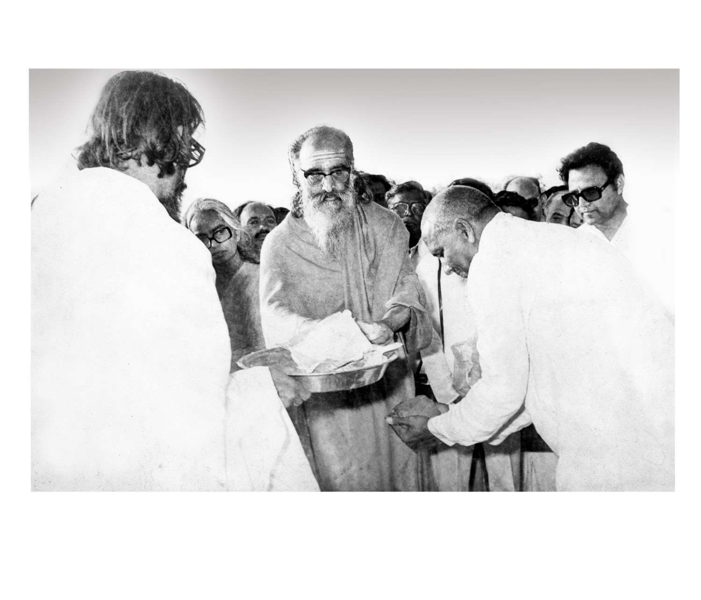
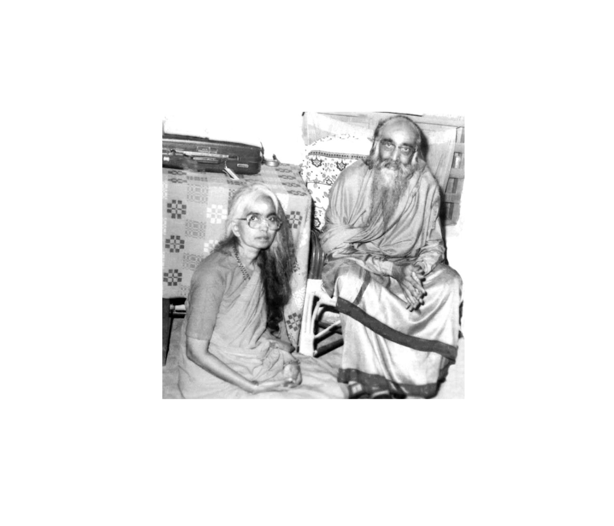
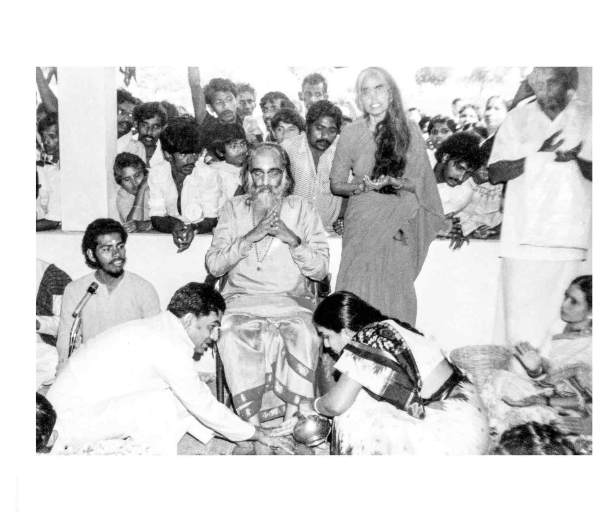
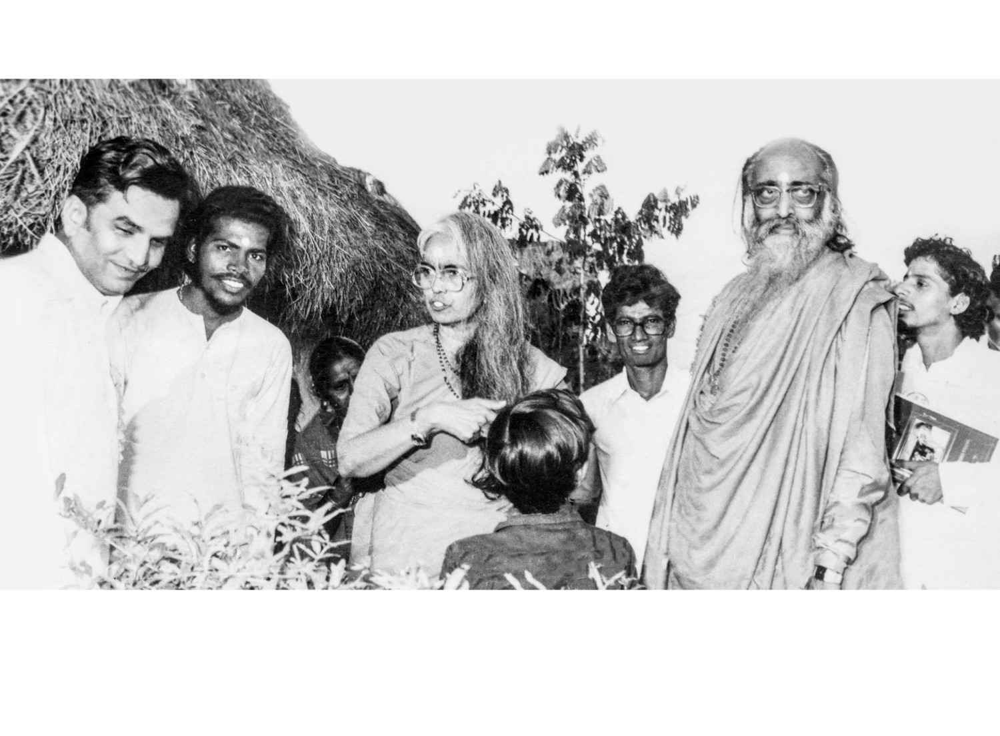
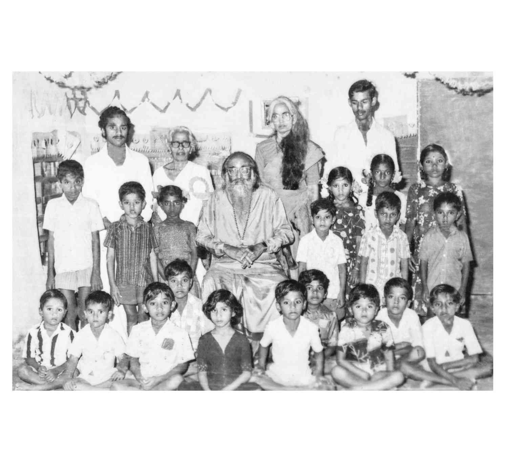
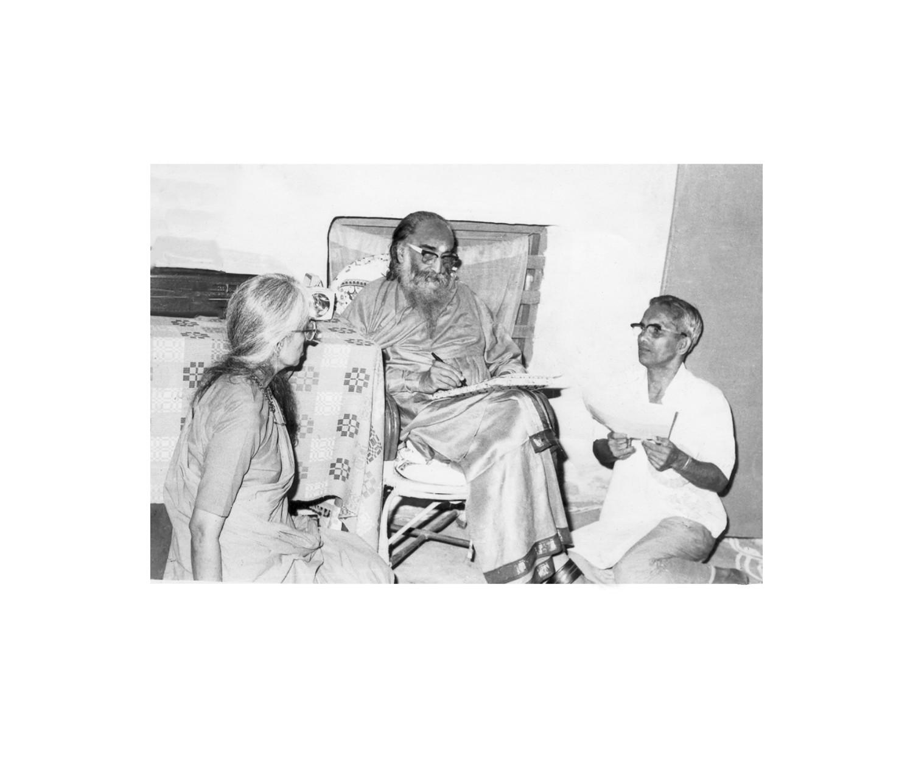
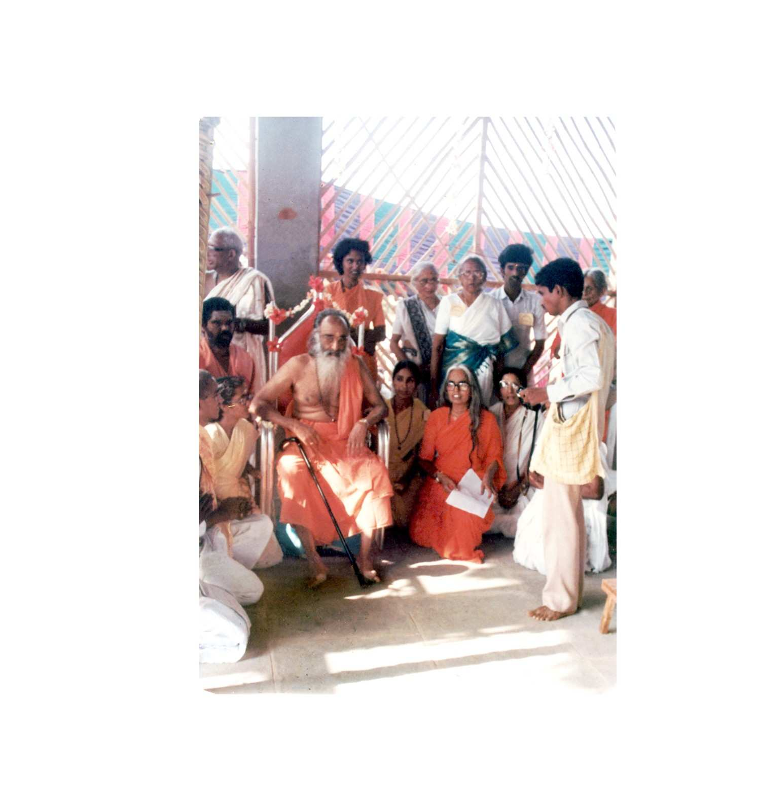

Gurudev at Acharya Bhavan, Chinmayaranyam
Pujya Gurudev Swami Chinmayananda
Pujya Gurudev Swami Chinmayananda (1916–1993) was one of the most influential spiritual leaders of the 20th century. Through his dynamic exposition of Vedantic philosophy and his charismatic personality, he inspired millions worldwide to pursue a life of purpose, devotion, and service.
His visits to Chinmayaranyam were moments of immense spiritual significance, where he blessed the land, guided the establishment of the ashram, and inspired the community with his wisdom and vision for a spiritually awakened society.
“What you have is His gift to you. What you do with what you have is your gift to Him.”
Guru Parampara
• • •The sacred lineage of spiritual masters through whom the eternal wisdom of Vedanta flows — a tradition of enlightened teachers guiding humanity across the ages.

Sacred Visits to Chinmayaranyam
• • •
Bhoomi Pooja & Blessing the Sacred Land
Sri Gurudev Swami Chinmayanandaji's first visit to Ellayapalle on 8th Feb. 1982 was to conduct Bhoomi Pooja. Gurudev proclaimed that this Ashram would be a new type of Ashram where the poor and the needy would be served with love and affection, setting an example to the whole country for village uplift.

Gurudev with Pujya Mataji Saradapriyananda
With Pujya Mataji Saradapriyananda
Gurudev personally guided Pujya Swamini Saradapriyananda Mataji in transforming the barren 24-acre burial ground into a lush green ashram. Pointing out with His walking stick to two banyan trees, Swamiji said, “Dig along the line that connects the two trees. Water is sure to come.” And water did spring forth from the bore-well.

Pada Puja by Devotees
Devotees of Chinmayaranyam performed Pada Puja (worship at the feet of the Guru) to express their reverence and gratitude. Gurudev, with folded hands, blessed each devotee, exemplifying the sacred Guru-Shishya tradition that forms the spiritual foundation of Chinmaya Mission.

Gurudev & Mataji among the villagers of Ellayapalle
Walking Through Ellayapalle Village
Recalling Gurudev's visit, Mataji said, “Gurudev was walking along the two streets of Ellayapalle Village. In Harizan lane, an elderly man came out of his hut lifting up his hands in salutations. Immediately Gurudev embraced in all love and said loudly ‘Hari Om! Hari Om!’ That was the real Bhoomi Pooja for Chinmayaranyam Complex.”

Gurudev with children & Mataji at Chinmayaranyam
Vision for Education
Gurudev's vision extended beyond spiritual activities. He envisioned Chinmayaranyam as a centre where children of the surrounding villages would receive value-based education. This vision laid the seeds for what would become Chinmaya Harihara Vidyalaya, nurturing hundreds of students every year.
Words of Wisdom
• • •“We are what our thoughts have made us. So take care about what you think.”
“The world is for you, not you for the world. Act, but do not get lost in action.”
Photo Gallery
• • •
